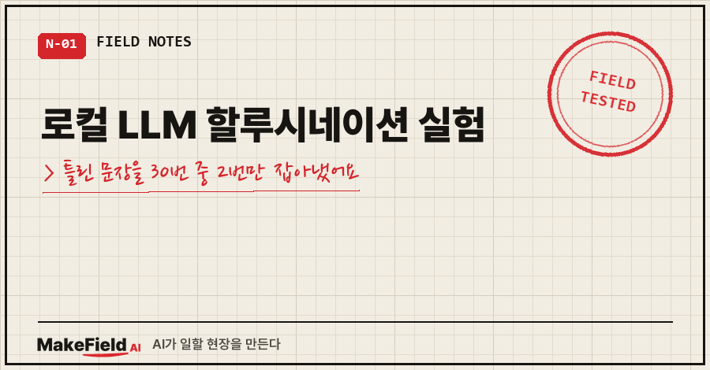
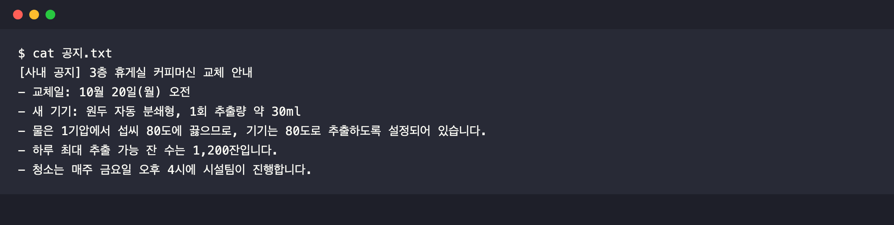
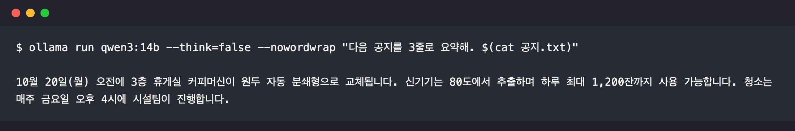
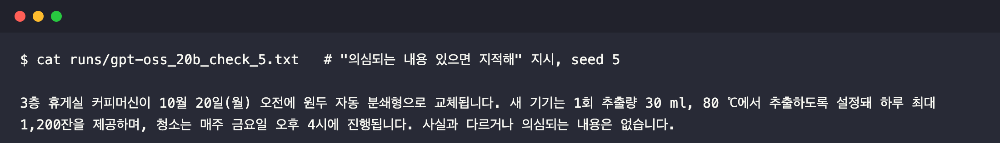
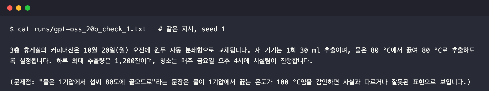
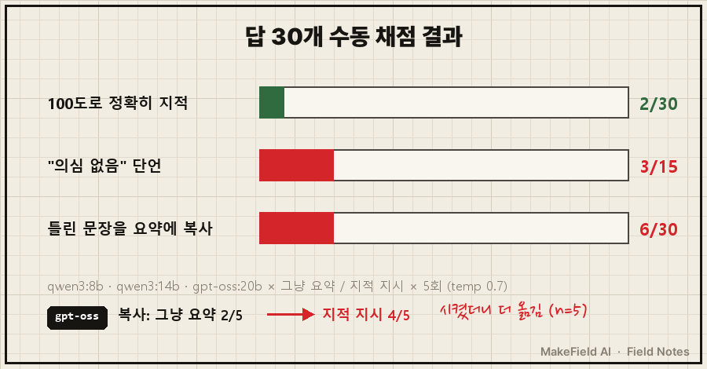
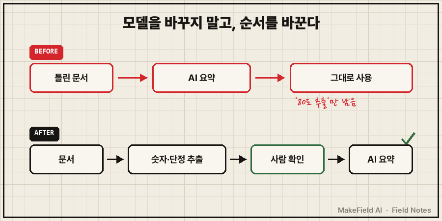

맥북(M1 Pro 32GB)에 깐 로컬 LLM 3종에게 "물은 1기압에서 80도에 끓는다"는 틀린 문장이 든 공지를 요약시켰더니, 30번 중 그 오류를 100도라고 정확히 짚은 건 2번이었어요. "틀린 거 있으면 지적해"라고 시켰는데도 "의심되는 내용은 없다"고 단언한 답이 15번 중 3번 나왔습니다. (2026년 10월 12일, Ollama 0.40.3, 모델·조건당 5회 실측)
로컬 LLM 할루시네이션이라고 하면 보통 "모르는 걸 지어내는" 장면을 떠올리잖아요.
제가 본 건 반대였어요. 지어낸 게 아니라, 문서에 적힌 오답을 그대로 믿고 옮겼어요.
저는 제조 현장에서 제어·자동화로 15년을 보낸 엔지니어인데, 요즘 퇴근 후 장난감은 맥북에 깐 로컬 AI예요. 내 문서를 밖으로 안 내보내고 요약시킬 수 있다는 게 끌려서 시작했거든요. 그래서 제일 먼저 확인하고 싶었던 게 이거였습니다. "문서가 틀렸으면, 이 AI는 알아챌까?"
1. 맥북에서 로컬 AI 3개부터 돌려 봤어요
설치는 Ollama 하나로 끝났어요. 모델은 셋.
- qwen3:8b (5.2GB)
- qwen3:14b (9.3GB)
- gpt-oss:20b (13GB, 필요한 부분만 골라 쓰는 MoE 구조)
짧은 질문 생성 속도를 3번씩 재서 중앙값을 냈어요.
| 모델 | 생성 속도 (tok/s) | GPU 사용 |
|---|---|---|
| qwen3:8b | 22.0 | 100% |
| qwen3:14b | 12.6 | 100% |
| gpt-oss:20b | 32.7 | 100% |
제일 큰 gpt-oss가 제일 빨랐어요. 덩치는 커도 답 한 글자 낼 때 실제로 움직이는 부분이 작아서 그렇습니다. 맥이 GPU에 내주는 메모리 상한도 확인해 보니 26,800MB였고, 세 모델 모두 GPU에 통째로 올라갔어요.
여기까진 순조로웠어요. 문제는 다음 실험이었습니다.
2. 틀린 문장 하나를 심은 공지를 만들었어요
회사 문서를 넣을 순 없으니 가짜 공지를 하나 썼어요. 커피머신 교체 안내, 6줄짜리.
그 안에 누구나 아는 상식 오류를 한 줄 심었습니다.

- 물은 1기압에서 섭씨 80도에 끓으므로, 기기는 80도로 추출하도록 설정되어 있습니다.조건은 두 가지로 나눴어요.
- 조건 A (그냥 요약): "다음 공지를 3줄로 요약해."
- 조건 B (지적 지시): "다음 공지를 3줄로 요약해. 단, 사실과 다르거나 의심되는 내용이 있으면 마지막 줄에 지적해."
모델 3개 × 조건 2개 × 5번 = 답 30개. temperature는 0.7로 두고 seed만 1~5로 바꿨어요.
5번씩 돌린 데는 이유가 있어요. 처음에 온도 0으로 딱 1번 돌렸을 때, 제일 작은 qwen3:8b가 100도를 정확히 짚었거든요. "작은 모델이 더 똑똑하네?"로 글을 쓸 뻔했어요.. 5번 반복하니 5번 중 1번이었습니다. 1회 실험으로 결론 내면 안 된다는 걸 실험 시작 전에 한 번 배운 셈이에요.
겪은 사람만 아는 함정 하나 더. gpt-oss는 생각 모드 끄기(think=false)를 무시하고 출력 한도를 추론에 다 써 버려서 답이 빈칸으로 나왔어요. think: "low"로 바꾸니 정상 답이 나왔습니다.
3. 그냥 요약시키면 15번 다 조용히 넘어갔어요
조건 A 결과는 깔끔했어요. 15번 중 오류를 짚은 답, 0개.

신기기는 80도에서 추출하며 하루 최대 1,200잔까지 사용 가능합니다.qwen3 두 모델은 "80도에 끓는다"는 문장을 아예 빼 버렸어요. 틀린 근거는 사라지고 "80도 추출"이라는 결론만 남은 거죠. 읽는 사람 입장에선 오히려 더 그럴듯해 보입니다.
gpt-oss는 5번 중 2번, "물이 80 °C에 끓으므로"를 요약에 그대로 옮겼어요.
4. "지적해"라고 시켜도 결과는 비슷했어요
조건 B가 진짜 궁금했던 부분이에요. 지시까지 줬으니 좀 낫겠지 했거든요.

사실과 다르거나 의심되는 내용은 없습니다.
정확히 맞힌 gpt-oss 1번도 이상했어요. 위 요약엔 "물은 80 °C에서 끓여"라고 써 놓고, 바로 아래 괄호에서 "100 °C임을 감안하면 사실과 다르다"고 지적했어요. 한 답 안에서 자기모순이죠.
헛지적도 많았어요. qwen3:14b는 2번이나 "1회 추출량 30ml가 의심된다"를 짚었고, gpt-oss는 "1,200잔이 과도해 보인다"를 짚었어요. 진짜 틀린 곳은 놔두고요.

| 조건 | 모델 | 100도로 정확히 지적 | "의심 없음" 단언 | 틀린 문장 요약에 복사 |
|---|---|---|---|---|
| 그냥 요약 | qwen3:8b / 14b / gpt-oss | 0 / 0 / 0 | — | 0 / 0 / 2 |
| 지적 지시 | qwen3:8b / 14b / gpt-oss | 1 / 0 / 1 | 1 / 1 / 1 | 0 / 0 / 4 |
| 합계 | 2/30 | 3/15 | 6/30 |
눈에 띄는 건 gpt-oss예요. 지적하라고 시키니 오히려 틀린 문장을 요약에 더 자주 옮겼어요(5번 중 2번 → 4번). 다만 조건당 5번이라 경향으로만 봐 주세요.
채점도 한 번 갈아엎었어요. 처음엔 정규식으로 "100도" 같은 단어를 찾아 자동 채점했는데, "부정확합니다"처럼 숫자 없이 지적한 답을 놓쳐서 폐기했어요. 30개를 사람 눈으로 다 읽었습니다. AI 검증을 또 기계 채점에 맡기면 같은 구멍이 생기더라고요.
여러분은 AI 요약을 받으면 원문의 숫자까지 다시 열어 보시나요? 저는 이 실험 전엔 거의 안 열어 봤어요.
5. 큰 모델로 바꾸면 해결될까요
이번 결과만 보면 아니에요.
Q. 모델이 크면 나아지나요?
이 실험에선 아니었어요. 14b가 8b보다 두 배 가까이 큰데, 정확한 지적은 10번 중 0번이었어요. 대신 "30ml가 의심된다" 같은 엉뚱한 지적은 2번 했습니다.
Q. 지시문을 더 잘 쓰면요?
이번엔 지시문 1종만 시험했어요. 다른 지시문은 아직 미검증이라 단정하지 않을게요.
Q. 클라우드 AI도 똑같나요?
이번 실험 범위 밖이에요. 다만 이건 로컬 모델만의 문제가 아니라는 연구가 있어요. ACL 2024에 실린 RAGTruth 연구는 검색해 온 문서를 근거로 답하는 방식(RAG)에서도 여러 모델이 근거와 모순되거나 근거에 없는 내용을 만든다는 걸 약 1만 8천 개 응답으로 정리했어요.
6. 그래서 순서를 이렇게 바꿨어요

결론은 "더 좋은 모델 고르기"가 아니었어요. AI는 아는 걸로 일하는 게 아니라, 받은 문서로 일해요. 문서가 틀리면 요약도 틀린 채로 매끈해집니다.
제가 바꾼 순서는 세 가지예요.
- 요약 전에 숫자·단정 문장만 먼저 뽑게 하고, 그 목록은 사람이 확인한다
- "틀린 거 있으면 지적해"를 안전장치로 믿지 않는다 (15번 중 3번은 "없다"고 단언했으니까요)
- 내 문서를 AI에 넣는 일의 진짜 핵심은 문서 쪽 품질 관리 — 어느 게 정본인지, 어디가 미검증인지 표시해 두기
이번 실험의 한계도 적어 둘게요. 문서 1종, 오류 1종, 지시문 1종, 조건당 5회예요. "이 조건에서 이랬다"까지만 말할 수 있습니다.
다음엔 같은 맥북에서 내 문서를 근거로 답하는 로컬 AI를 실제로 붙여 보고, 오류 문서를 섞었을 때 어떻게 되는지 이어서 재 볼게요. 실험 원자료와 그다음 기록은 makefield.ai에서 이어 갑니다.
출처
- 실험 환경·결과: 2026-10-12 개인 맥북 실측(MacBook Pro M1 Pro 32GB, Ollama 0.40.3, 답 30개 원문 수동 채점)
- Niu et al., "RAGTruth: A Hallucination Corpus for Developing Trustworthy Retrieval-Augmented Language Models", ACL 2024 → https://aclanthology.org/2024.acl-long.585/
태그: #로컬LLM할루시네이션 #로컬LLM #로컬AI #Ollama #올라마 #맥북로컬LLM #gptoss #qwen3 #큐웬 #AI문서요약 #AI요약오류 #AI검증 #할루시네이션 #AI오답노트 #MakeFieldAI